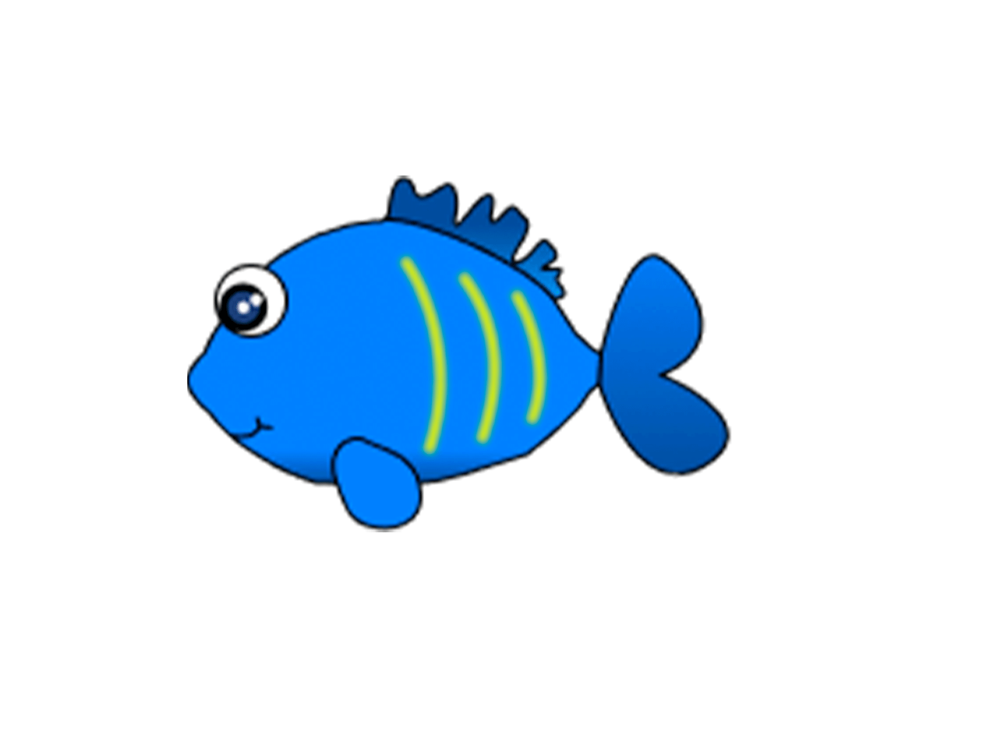

Gulfinnet kirurg fisk

Navn
Gulfinnet kirurg fisk
Hvor bor den?:
I Det Indiske Ocean og Stillehavet, ofte i koralrev.
Kendetegn/Udseende:
Klar blå krop med gule finner - meget iøjnefaldende og smuk.
Fun fact:
Det er den fisk, som figuren “Dory” i Find Nemo og Find Dory er inspireret af!